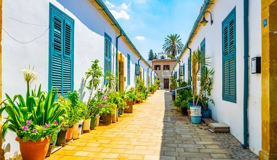
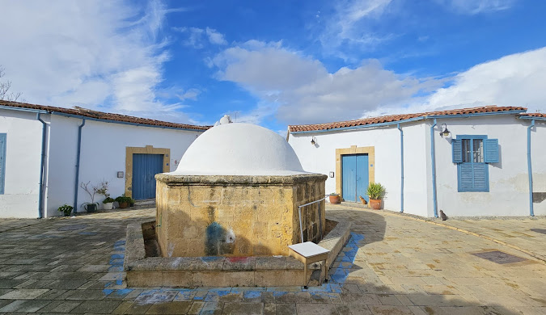
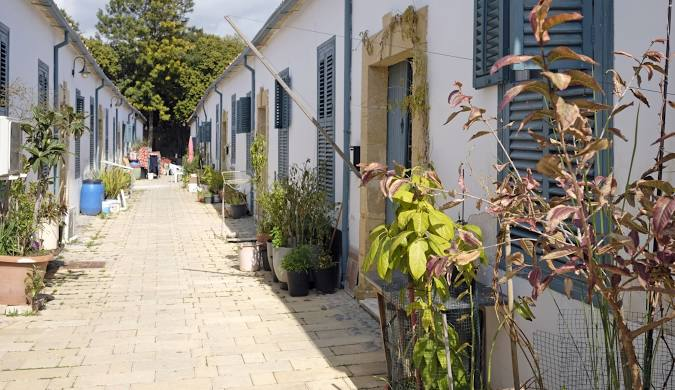

Samanbahçe, Kuzey Kıbrıs Türk Cumhuriyeti’nin başkenti Lefkoşa’da yer alan tarihi bir yerleşim alanıdır. Osmanlı döneminde, özellikle dar gelirli aileler için planlı bir şekilde inşa edilen toplu konutlardan oluşur ve bu yönüyle sosyal konut anlayışının erken örneklerinden biridir. Evler genellikle tek katlı, avlulu ve birbirine bitişik şekilde yapılmış olup geleneksel Kıbrıs mimarisini yansıtır. Ortak kullanım alanları ve iç avluları sayesinde mahalle kültürü oldukça güçlüdür. Günümüzde restore edilerek turistik ve kültürel bir değer olarak korunmaktadır.


Ana Sayfaya Dön